용접정반에서는 ① 평평한 윗면이 기준 면입니다. 재료를 그 면에 올리고 ② 윗면 구멍과 ③ 옆면 구멍에 지그와 클램프를 꽂아 재료를 잡습니다. 재료를 놓을 자리는 ④ 모서리 눈금으로 읽습니다. ⑤ 두께 200mm 주철 상판은 열과 무게에 따른 변형을 줄여 윗면이 평평하도록 돕고, ⑥ 다리 아래의 수평 조절 발로 바닥 높낮이를 맞춥니다.
이 부분들은 한꺼번에 나온 것이 아닙니다. 높은 곳을 찾아 깎는 방법, 판끼리 맞대어 평면을 만드는 방법, 기계로 넓은 면을 깎는 방법, 판을 받치는 방법, 구멍에 지그를 꽂는 방법이 하나씩 나왔습니다. 아래 칸들은 사진 속 부분이 어디서 왔는지 시대 순서로 따라갑니다.
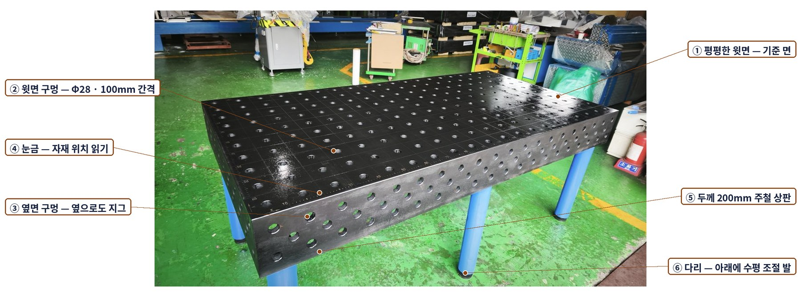
| 지금 기계의 부분 | 처음 나온 곳 | 이 글의 칸 |
|---|---|---|
| ① 평평한 윗면 — 높은 곳을 찾아 깎는 방법 | 고대 이집트 석공의 붉은 흙 시험판 | 붉은 흙 |
| ① 윗면이 작업대이자 기준 판 | 1800년 무렵 런던 모즐리 공장의 기준 판 | 모즐리 공장 |
| ① 다른 기준 없이 평면을 만드는 방법 | 모즐리 공장의 세 장 맞춤 | 세 장 맞춤 |
| ① 남은 높은 점을 없애는 마무리 | 모즐리 공장의 긁어 맞추기 | 긁어 맞추기 |
| ③ 직각 — 수직도 0.1/200 | 1810년대 후반 영국의 평삭기 | 평삭기 |
| ⑥ 판을 받치는 원칙 | 1840년 휘트워스가 글로 정리한 세 점 받침 | 휘트워스 |
| ⑤ 휘지 않는 주철 상판 · ⑥ 바닥에 맞추는 다리 | 갈빗살을 넣은 주철 정반과 세 점 받침 | 갈빗살과 세 점 받침 |
| ⑤ 주철 — 측정용 정반과 갈라진 길 | 2차 세계대전 무렵 미국의 화강암 정반 | 화강암 정반 |
| ② 윗면 구멍 · ③ 옆면 구멍 | 1980~90년대 독일의 구멍 뚫린 용접정반 | 3D 용접정반 |
| ④ 눈금 · 구멍에 꽂는 지그와 클램프 | 저희 공장 응용 작업(창호 조립용 틀) | 응용 작업 |
정반은 다른 물건이 평평한지, 직각인지 잴 때 기준으로 삼는 평평한 판입니다. 재려는 물건을 정반 위에 올려 대 보거나, 정반 면을 기준으로 높이를 잽니다. 용접정반도 같은 갈래의 도구로, 평평한 면 위에 재료를 올려 고정한 다음 용접합니다.
평평한 판을 만들려면 평평한 기준이 있어야 하고, 그 기준을 만들려면 또 기준이 있어야 합니다. 기준이 없는 데서 처음 평면을 어떻게 만들었는지가 이 글의 줄거리입니다.
지금 기계에서는 — 용접정반도 ① 윗면이 기준입니다. 재료를 윗면에 올려 놓고 높이와 직각을 맞춘 다음 용접합니다.
그전에는 다듬은 면을 눈으로만 보아서는 어디가 조금 높은지 알기 어려웠습니다.
바뀐 것은 높은 곳을 눈에 보이게 만든 방법입니다. 이집트 석공은 평평한 시험판에 붉은 흙(산화철 가루)을 바르고, 다듬는 돌 면에 대 보았습니다. 붉은 흙이 묻은 자리가 높은 곳이므로 그 자리를 깎아 내고 다시 대 보기를 되풀이했습니다. 붉은 점이 1인치(약 2.5cm) 안팎 간격으로 면 전체에 고르게 묻을 때까지 했다고 합니다.
지금도 정반을 맞출 때는 기준 판에 파란 안료(묻으면 자국이 남는 색 반죽)를 얇게 바르고 대 본 다음, 안료가 묻은 자리를 긁어 냅니다. 색만 다르고 원리는 같습니다.
지금 기계에서는 — 제조사는 출고 전에 곧은 자(스트레이트에지)를 ① 윗면에 올리고 틈새 게이지(얇은 쇠 판 자)를 밀어 넣어 윗면이 평평한지 확인합니다. 안료 대신 틈의 크기를 재지만, 높은 곳을 찾는다는 생각은 같습니다.
그전에는 정밀한 기준 판이 공장에서 흔히 쓰는 도구가 아니었습니다.
바뀐 것은 기준 판을 두는 자리입니다. 정밀한 정반이 중요하다는 것을 처음 알아본 사람으로 헨리 모즐리가 꼽힙니다. 기계 이야기 2편 「나사산과 탭의 역사」에서 나사 깎는 선반을, 3편 「톱과 원형톱의 역사」에서 포츠머스 도르래 공장의 기계를 만든 사람입니다.
런던의 모즐리 공장에서는 기준 판을 작업자 작업대 옆에 두고, 자기가 다듬은 부품을 대 보며 맞추게 했습니다. 모즐리의 작업대에는 「대법관」이라고 부른 탁상 측정기도 있었습니다. 마지막 판정을 내리는 측정기라는 뜻으로 붙인 별명입니다. 천분의 1인치(약 0.025mm)까지 읽을 수 있어, 다른 자와 값이 다르면 이 측정기 값을 최종으로 믿었다고 합니다.
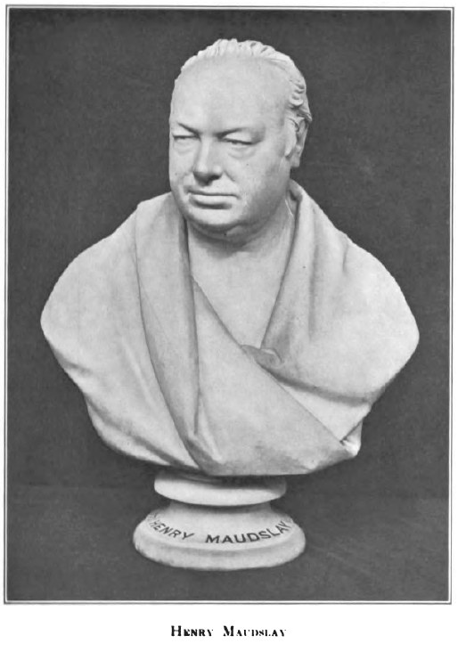
지금 기계에서는 — 용접정반은 ① 윗면이 작업대이면서 기준 판입니다. 기준 판을 옆에 두고 대 보는 대신, 재료를 기준 면 위에 바로 올려 놓고 맞춥니다.
그전에는 기준 판을 만들려면 그보다 더 평평한 기준 판이 있어야 했습니다. 그 기준 판을 만들려면 또 기준이 있어야 했습니다.
바뀐 것은 만드는 장수입니다. 모즐리 공장에서는 기준 판을 한 장이 아니라 세 장을 함께 만들었습니다. 세 장을 번갈아 맞대어 보고, 닿는 높은 곳을 깎아 내기를 되풀이하는 방법이었습니다.
세 장인 까닭은 이렇습니다. 두 장만 맞대면 한 장이 오목하고 다른 한 장이 볼록해도 서로 꼭 맞을 수 있습니다. 그래서 두 장이 맞았다고 평면이라고 할 수 없습니다. 셋째 판을 더해 짝을 바꿔 가며 맞대면, 세 장이 모두 서로 맞는 모양은 평면 하나뿐입니다. 다른 기준 없이 판끼리만으로 평면을 만들 수 있는 방법입니다.
지금 기계에서는 — 평평한 정도를 숫자로 적습니다. DCP28의 평탄도 0.1/1000은 길이 1,000mm에서 높낮이 차이가 0.1mm 이내라는 뜻입니다.
그전에는 판끼리 맞대어 맞추면 큰 휘어짐은 줄지만, 작은 높은 점이 남았습니다.
바뀐 것은 마무리 방법입니다. 모즐리 공장에서는 남은 점을 담금질한(열처리로 단단하게 만든) 쇠 긁개로 하나씩 긁어 냈습니다. 1829년부터 모즐리 밑에서 일했던 제임스 네이즈미스는 자서전에, 거의 다 맞은 판끼리는 얇은 공기층 위에 떠서 미끄러졌다고 적었습니다. 긁어 맞춘 쇠 정반 윗면에는 긁은 자국이 비늘 무늬처럼 남습니다.
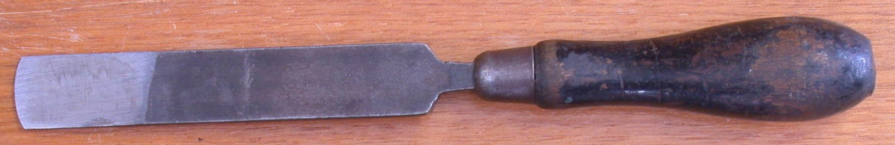
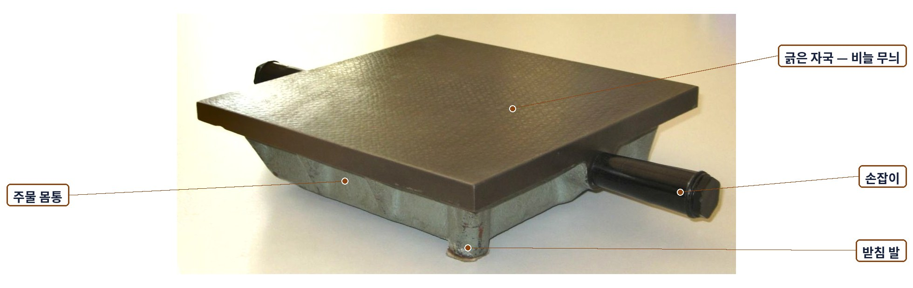
지금 기계에서는 — 용접정반 ① 윗면은 표면처리로 마무리합니다. DCP28 흑착색은 검은 산화 피막(쇠 표면을 검게 바꾼 얇은 막)으로 녹이 잘 슬지 않고 용접 불똥(스패터)이 덜 붙게 했습니다. 질화(표면에 질소를 스며들게 해 단단하게 하는 처리) 제품도 있습니다.
그전에는 넓은 쇠 면을 사람이 정(쇠를 깎는 끌)과 줄로 깎아 맞췄습니다. 시간이 오래 걸리고 일손이 많이 들었습니다.
바뀐 것은 깎는 일을 맡은 쪽입니다. 평삭기는 공작물을 실은 작업대가 앞뒤로 움직이고, 제자리에 고정된 날이 그 위를 얇게 깎아 금속 면을 평평하게 만드는 기계입니다. 1810년대 후반 영국의 여러 공장에서 쓰이기 시작했는데, 누가 먼저 만들었는지는 자료마다 다릅니다. 평삭기가 나오면서 손으로 하던 일 가운데 큰 부분을 기계가 맡게 되었습니다.
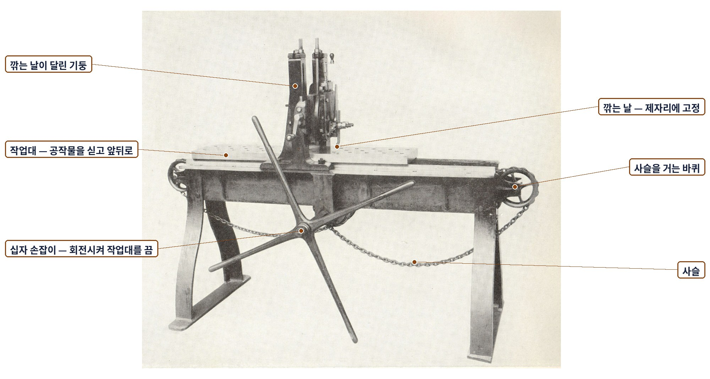
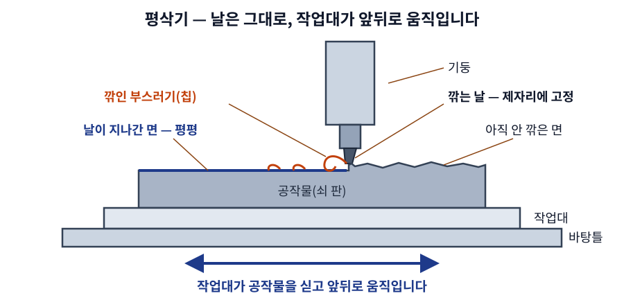
지금 기계에서는 — 기계로 면을 깎으면서 평평함과 직각을 같은 기준으로 되풀이해 맞출 수 있게 되었습니다. DCP28의 수직도 0.1/200은 높이 200mm에서 어긋남이 0.1mm 이내라는 뜻입니다. 제조사는 출고 전에 윗면에 세운 앵글 지그를 디지털 각도자로 재어 90.0°를 확인합니다.
그전에는 세 장 맞춤과 긁기는 모즐리 공장 같은 몇몇 공장 안에서 쓰던 방법이었습니다.
바뀐 것은 방법을 글로 적어 널리 알린 것입니다. 조지프 휘트워스는 1825년부터 모즐리 밑에서 일했고, 1833년 맨체스터에 자기 회사를 세웠습니다. 2편에서 55° 나사산 규격을 만든 사람으로 소개한 그 휘트워스입니다.
1840년 휘트워스는 영국 과학진흥협회 글래스고 모임에서 금속 평면을 만드는 방법에 관한 글을 발표했습니다. 갈아서 만든 면은 참평면(완전히 평평한 면)이 될 수 없고, 세 장을 번갈아 맞대어 고치는 방법만 오차를 없앤다는 내용이었습니다. 기준 판은 세 점으로 받쳐야 평면이 유지된다고도 적었습니다.
1856년 글래스고 기계공학회 첫 모임 연설에서는, 갈기가 아니라 긁기로 참평면을 만든다고 다시 밝혔습니다. 30년 전에는 주철 면 1제곱피트(약 30cm × 30cm)를 손 정(쇠를 깎는 끌)과 줄로 맞추는 데 12실링이 들었는데, 평삭기로 깎으면 1페니도 들지 않는다고도 했습니다. 1실링이 12페니이니 백 배 넘게 줄어든 셈입니다.
누가 처음 세 장 맞춤을 했는지는 자료마다 다릅니다. 이 글에서는 모즐리 공장에서 쓰던 방법을 휘트워스가 글로 정리해 널리 알린 것으로 적었습니다.
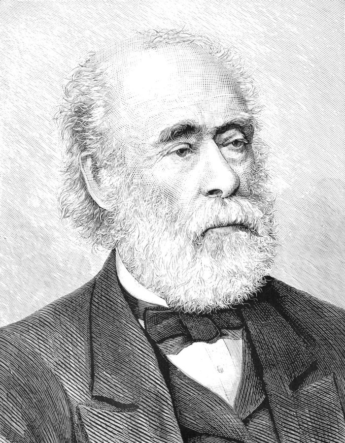
지금 기계에서는 — 세 점 받침은 바닥이 고르지 않아도 세 점이 모두 바닥에 닿게 하는 방법입니다. 크고 무거운 용접정반은 ⑥ 다리가 여럿이라, 다리마다 붙은 수평 조절 발로 높이를 맞춰 같은 효과를 얻습니다.
그전에는 판은 무게에 눌리면 휘고, 네 점으로 받치면 바닥이 조금만 고르지 않아도 한 점이 뜨거나 판이 비틀릴 수 있습니다.
바뀐 것은 판의 뒤쪽 모양과 받치는 점의 수입니다. 1840년 휘트워스가 내보인 정반은 주철로 만든 네모난 판으로, 뒤쪽에 갈빗살(판이 휘지 않게 받치는 보강 살)을 넣고 세 점으로 받쳤다고 합니다. 세 점으로 받치면 바닥이 조금 고르지 않아도 세 점이 모두 바닥에 닿아 판이 안정됩니다. 휘트워스는 그 뒤에 육각 모양 정반으로도 특허를 받았습니다.
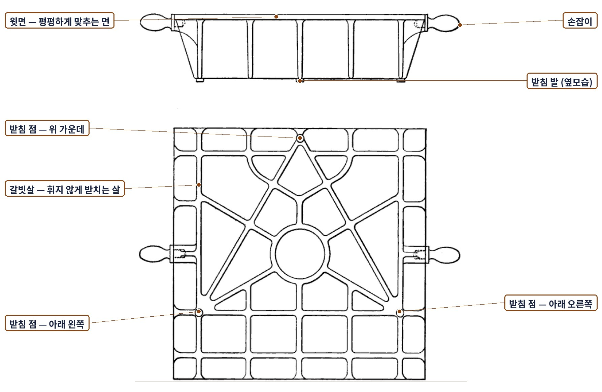
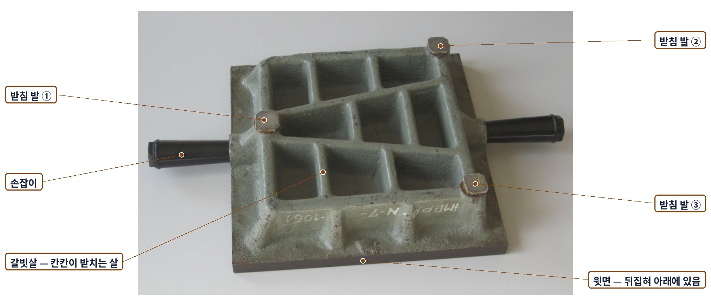
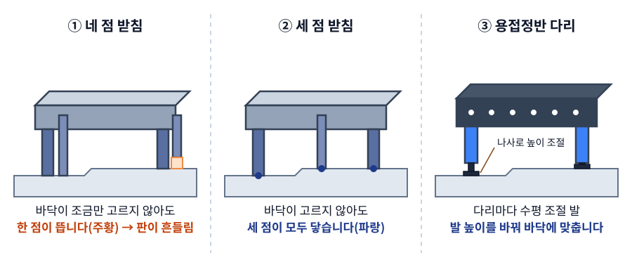
지금 기계에서는 — DCP28 상판은 두께 200mm 주철이고, ⑥ 다리(표준 지지대)는 Φ89(지름 89mm) 강관(쇠 파이프) 기둥 아래에 수평 조절 발을 달았습니다. 다리가 여럿이라도 발마다 높이를 바꿔 다리마다 바닥에 닿게 맞출 수 있습니다. 표준 지지대 쪽에는 「바닥 수평을 미세 조정해 상판 평탄도를 맞춰 준다」고 적어 두었습니다.
그전에는 정반을 주철로 만드는 것이 보통이었습니다.
바뀐 것은 정반의 소재입니다. 2차 세계대전 중 쇠가 모자라자, 미국 오하이오주 데이턴에서 비석과 금속 가게를 하던 월리스 허먼이 정반을 화강암으로 만들었습니다.
지금 정밀 측정용 정반은 화강암이 많습니다. 주철 정반은 긁어 맞추기 쉬워서 기준 판이나 래핑(고운 가루를 사이에 두고 문질러 다듬기)용으로 남았습니다. 정밀한 정반의 예로, 국제 표준 ISO 8512-2의 0급은 250mm × 250mm 넓이 안에서 높낮이 차이가 3.5μm(0.0035mm) 이내입니다.
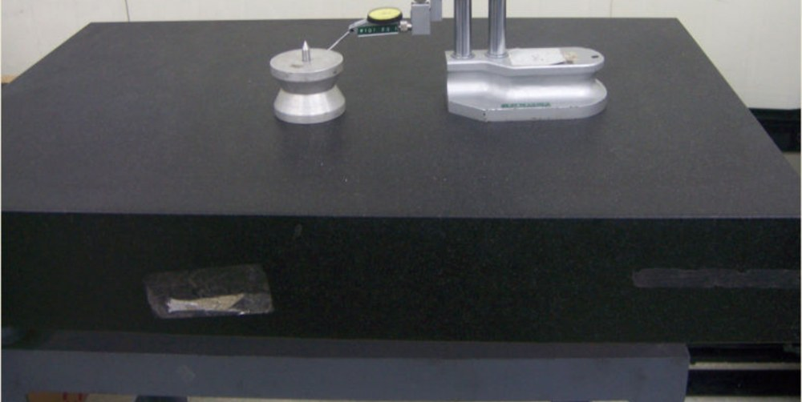
지금 기계에서는 — DCP28은 주철로 만듭니다. 주철은 진동을 잘 흡수하고 열과 무게에 따른 변형이 적어, 용접할 때 생기는 떨림을 줄이고 ① 윗면이 평평하도록 돕습니다.
그전에는 구멍이 없는 판에서는 재료를 잡는 틀을 판 위에 따로 고정해야 했습니다.
바뀐 것은 판에 뚫은 구멍입니다. 1980~90년대 독일에서, 정반에 구멍을 일정한 간격으로 뚫고 그 구멍에 볼트와 클램프를 꽂아 지그(재료를 제자리에 잡아 주는 틀)를 짜는 방식이 나왔습니다. 측정용 정반이 「재는 기준」이라면, 용접정반은 평평한 면을 기준으로 재료를 「잡아 두는」 작업대입니다.
지금 기계에서는 — DCP28은 ② 윗면에 Φ28 구멍을 100mm 간격으로 뚫었고, ③ 옆면에도 구멍이 있어 위와 옆 여러 방향으로 지그를 붙입니다. 이런 정반을 3D 용접정반이라고 부릅니다. 19규격 모두 같은 Φ28 구멍을 쓰므로 정반 크기를 바꿔도 D28 악세사리를 그대로 사용할 수 있습니다.
창호종합기계는 구멍 지름 28mm(D28) 3D 주철 용접정반 DCP28을 크기 19가지(19규격)로, 검게 착색한 흑착색과 표면을 단단하게 한 질화 두 가지 표면처리로 공급합니다. 소형·중형은 재고 여부를 확인해 드리고, 대형은 주문을 받아 수입합니다. 구멍 지름 16mm(D16) 규격은 요청하시면 수입해 공급합니다.
저희 공장 흑착색 정반에서는 D28 앵글(ㄱ자 모양 받침)을 네 방향으로 세워 창호 조립용 사각 틀을 짜 보았고, 토글클램프(손잡이를 젖혀 한 번에 죄는 클램프)로 알루미늄 자재를 잡은 뒤 자재 크기에 맞춰 클램프를 다른 구멍으로 옮겨 보았습니다. ④ 모서리 눈금으로 자리를 읽고 구멍에 꽂은 지그를 기준으로 삼으면, 같은 자리에 자재를 되풀이해 놓는 반복 지그를 꾸밀 수 있습니다.
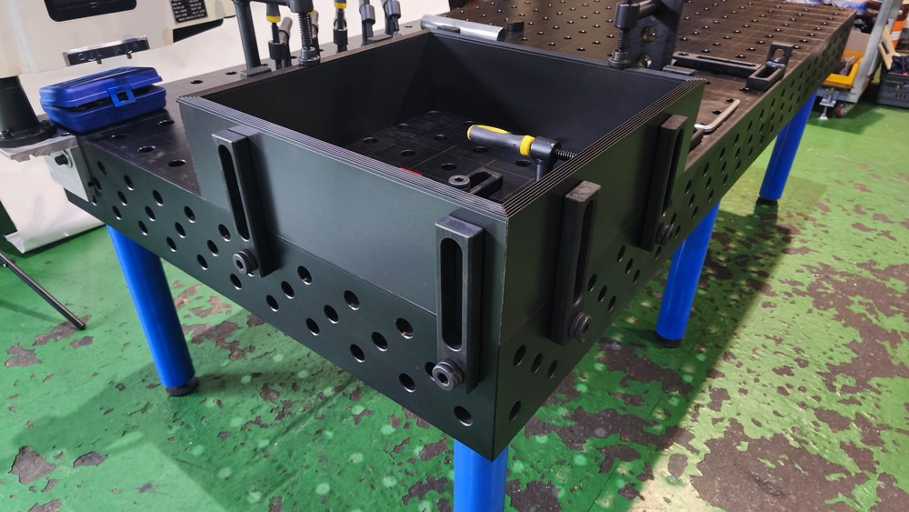
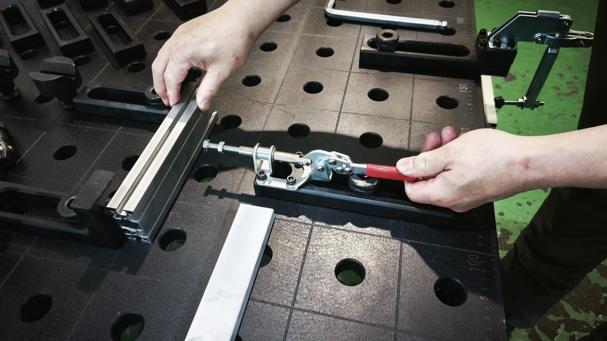
D28 구멍에 꽂는 지그·클램프 악세사리는 세트 5종과 낱개로 함께 구성합니다. 정반 크기와 용접할 재료를 알려 주시면 맞는 구성을 제안해 드립니다.
필요한 정반 크기와 용접할 재료를 알려 주시면 맞는 규격과 D28 악세사리 구성을 제안해 드립니다.